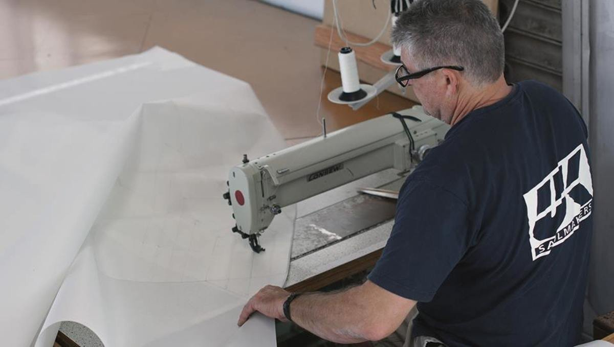
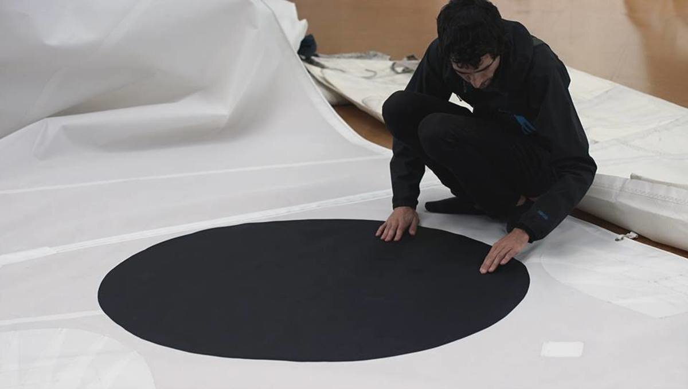
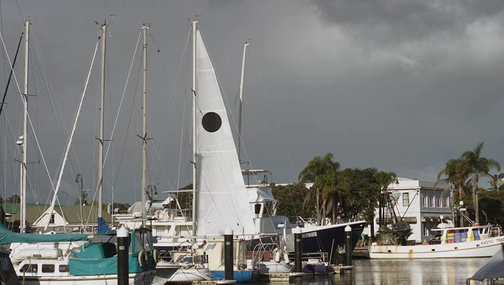
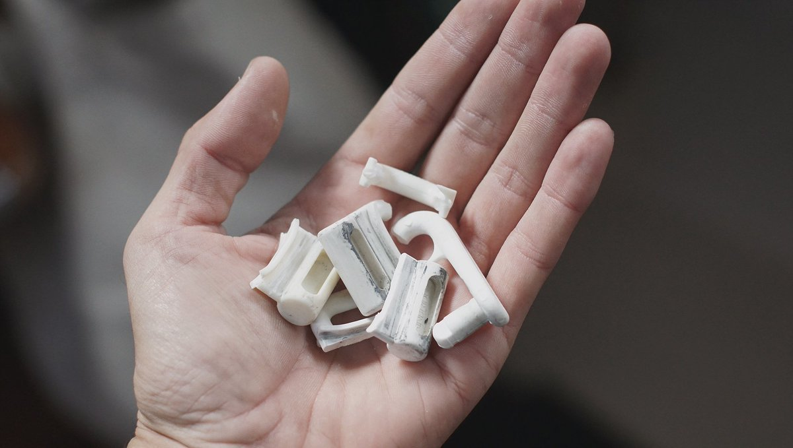
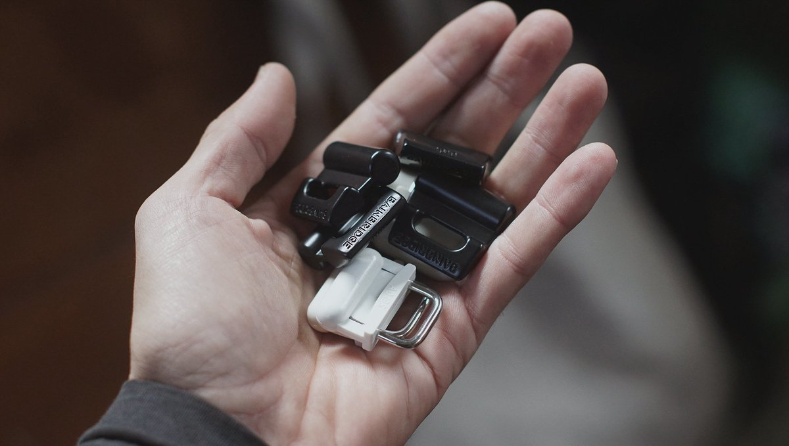

mainsail
2019.05.12
Whangarei, New Zealand
Click below dates for more recent updates:
For our passage north to Japan, we wanted to have a main with 3 reefs instead of 2. Our old main served us well, but we did not trust it to continue our circumnavigation of the Pacific.
Our plan was to get the material, and to try and sow it ourselves. We'd heard of people doing this before, Sailrite sells kits to do it. We didn't want to order from the US, and thought we'd go to a local sail loft to ask if they could make the cuts for us.
We believed we could do it, and even asked for the advice of UK sails. They were glad of our interest in this, and even gave us a stack of old needles to try in our sewing machine, as well as a slab of thick sail to do tests on. Unfortunately, our thrift store machine did not prove worthy of the task. But also, this, along with all the work we'd already done, was just too much. We had much ambition, but little time and energy.
Sails can last a long, long time, so we put in the money to get it done right in the end.
We tend to get carried away in our ideas, while I would like to sow up my own sail someday, now wasn't the time to experiment. We needed something solid, something that could get us through the hard sailing we'd have to do the next year.
We carried our old main over to UK sails, and chatted about what we wanted for our new main. We opted for a loose-footed sail (a sail that doesn't run in a track on the boom, only attached by two points), full-batten (made with pockets for long battens, that help keep the shape of the sail), 3 reefs (reinforced points of attachment, that you put lines through, and that you use to keep the sail down and tied when making the sail smaller in big winds), thick, with a black circle stuck to both sides. We don't have a staysail, a thick and small storm sail that is used instead of the mainsail in big weather, so we thought that this thicker main, with a third reef, could act as that. The people at UK sails were so damn nice to us, answering all our questions, and letting us film the process. We also had our jib (our headsail) re-stitched, we couldn't really afford to get this one replaced entirely, but it's still good and strong.
Take away: DIY is great if you have time. Sailmaking is intricate work, hard to get right, especially in a small cramped space. I think we could have succeeded, but again, this wasn't the time for experimenting. Pino needs a good set of wings, it is our main means of propulsion after all. If you are interested in doing it yourself though, there are plenty of tutorials around, and ask your local sail loft for advice, if they love their work and see you have an interest in it, they'll offer help.
Mainsail 3300$
Watch this video to see our new beautiful main!
2020.03.12
Shimizu, Japan
On the passage between Fiji and the Marshall Islands we had issues with the nylon slides in our main. Many broke, including the larger ones holding the battens. Our sail came with it, and we were very disappointed with them.
We carried replacements and changed them, then the same thing happened on the passage between Majuro and Ogasawara, and the one between there and mainland Japan. We were thoroughly fed up with these slides and ordered replacements. We bought B101 (11mmx2.5mm) slugs, which are SS slugs that are coated with PTFE, but this turned out to be a mistake. The coating would rub right off when sailing, or sliding the main up and down. We ended up replacing those too, because we were afraid that the bare SS would dig into our aluminum track.
We are now using the spare PTFE-coated slides on our bed project, a bit overkill for this purpose but we weren't using them.
We replaced them with A019S (10.0mm) PTFE reinforced nylon slugs with an internally welded stainless steel bail. We had these on our former main, and they worked well. We kept the big B101 (11mmx2.5mm) slugs for our battens, they did not break again, even during the 2-month long north pacific ocean crossing.
We used our third reef a LOT. For offshore, we would undo the first reef and refuse that line for the second reef instead. We ran a loop through the grommet of the third reef and would tie the former second reef line to it to secure it down. We hardly ever used our first reef, either the sail was up all the way, or down to 2/3 rds, or to a 1/3 in big weather.